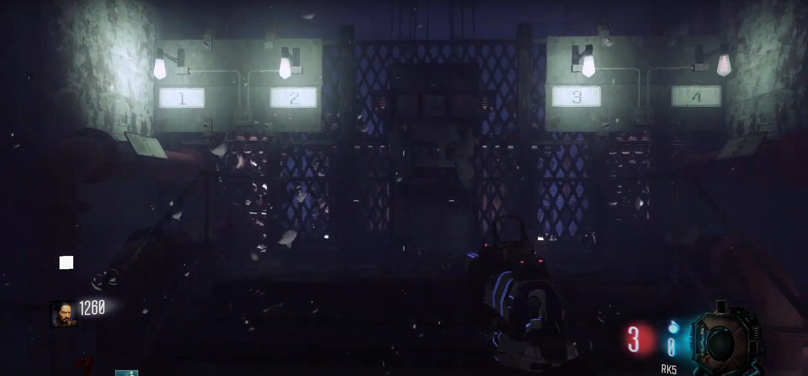
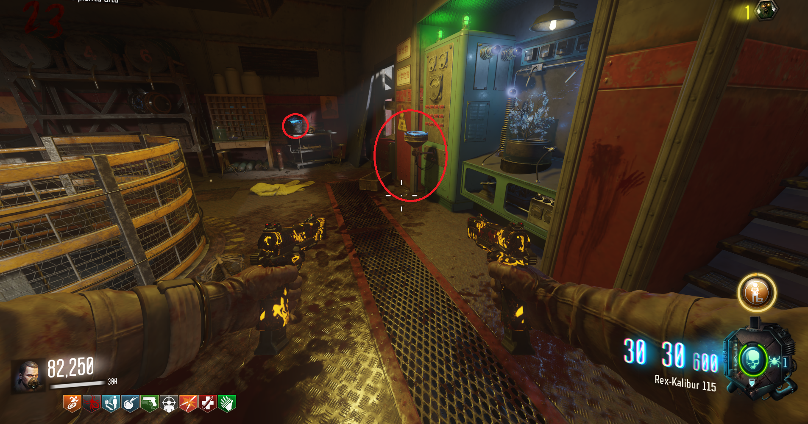
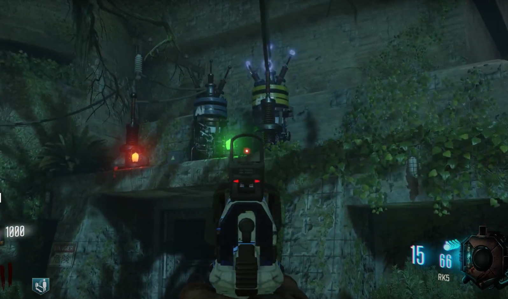
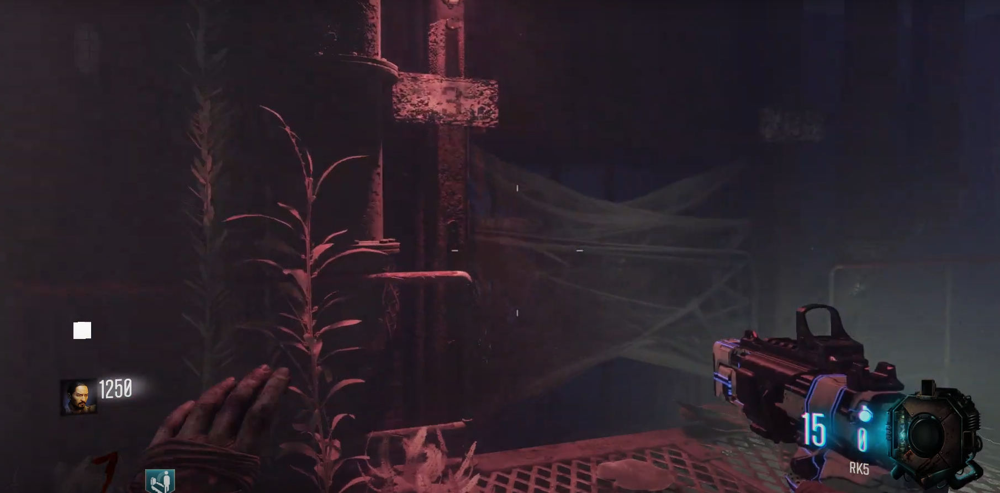

Activar electricidad (Zetzubou No Shima)

Rellenar cubos:
Tendremos que entrar en Lab A y Lab B a rellenar de cualquier líquido las máquinas. Necesitaremos cubos para esto.

Rápidamente, iremos al búnker y abriremos las puertas. Si esperamos mucho tiempo tendremos que repetir el paso de los cubos.

Arreglar turbina:
En la sala que está a la izquierda del Pack-A-Punch, accederemos a la electricidad. Nos sumergiremos, cortaremos la telade araña y mataremos a los zombies que aparezcan.

Por último al salir del agua, podremos accionar la palanca de la electricidad.